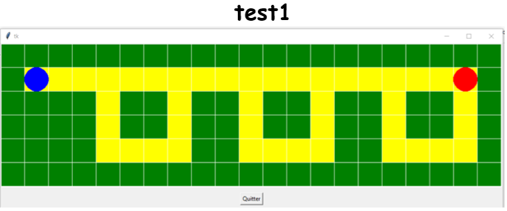

UAA13-14 TP4 Récursivité
TBD: Decouve 1 - 5: virer les IDE et mettre un onglet Solutions Decouv 13: sol calcul_terme_iteratid et calcul_terme_recursif Decouv 15: Challenge Découv 6 à 10: sol Exos: sol
Notions abordées :
TBD
Consignes
-
Prends connaissance du cours sur la récursivité puis fais les activités ci-dessous.
-
Le site de Franck Chambon sert de référence.
Déccouverte des fonctions
Cette première activité a pour but de revoir et compléter quelques notions sur les appels de fonctions et de prendre en main quelques outils simples de visualisations graphiques : Python Tutor et Recursion Visualizer.
Découv 1 : Avec une fonction (partie 1)
On considère le code Python suivant. Réponds aux questions en tapant le code dans l'éditeur ci-dessous.
def f(x):
return 2*x + 1
def ajouter(x):
return 2 + f(x)
- Que renvoie l'instruction
f(4)? - Que renvoie l'instruction
ajouter(4)?
-
Exécute le code fourni dans python tutor et analyse les étapes de l'exécution de l'instruction
ajouter(4)en terme d'appels et de renvois de fonctions. -
Exécute le code fourni dans Recursion visualize. Le schéma proposé par cet outil corrobore-t-il le résultat de la question 3 ?
Solution
1. >>> f(4)
9
2. >>> ajouter(4)
11
Découv 2 : Avec une fonction (partie 2)
On considère le code Python suivant. Réponds aux questions en tapant le code dans l'éditeur ci-dessous.
def f(x):
return 2*x + 1
def dilatation(x):
return f(3*x)
-
Que renvoie l'instruction
dilatation(4)? -
Exécute le code fourni dans python tutor et analyse les étapes de l'exécution de l'instruction
ajouter(4)en terme d'appels et de renvois de fonctions. -
Exécute le code fourni dans Recursion visualize. Le schéma proposé par cet outil corrobore-t-il le résultat de la question 2 ?
Solution
1. >>> dilatation(4)
25
Découv 3 : Avec 2 fonctions
On considère le code Python suivant. Réponds aux questions en l'exécutant avec Recursion visualize.
def f(x):
return 2*x + 1
def g(x):
return x**2
def somme(x):
return f(x) + g(x)
-
Que renvoie l'instruction
somme(4)? -
Dans quels ordres sont effectués les différents appels et renvois entre les trois fonctions ?
-
Vérifie en exécutant le code fourni dans Recursion visualize.
-
Exécute le code maintenant dans python tutor. Que deviennent les blocs d'appels sur les fonctions
fetgune fois ceux-ci exécutés ?
Solution
1. >>> somme(4)
25
2. 1) appel somme(4)
2) appel f(4) et renvoie le résultat 9
3) appel g(4) et renvoie le résultat 16
4) somme(4) calcule f(4) + g(4) renvoie le résultat 25
4. Les blocs d'appels f(x) et g(x) sont remplacés par les valeurs retournées par ces fonctions après leur exécution. C'est ce qu'on appelle l'évaluation des expressions.
Découv 4 : 1 fonction et 2 appels
On considère le code Python suivant. Réponds aux questions suivantes.
def f(x):
return 2*x + 1
def composition(x):
return f(f(x))
-
Que renvoie l'instruction
composition(4)? -
Dans quels ordres sont effectués les différents appels et renvois entre les deux fonctions ?
Vérifie en exécutant le code avec Recursion visualize.
Solution
1. >>> composition(4)
19
2. 1) appel composition(4)
2) appel f(4) et renvoie le résultat 9
3) appel f(9) et renvoie le résultat 19
4) composition(4) renvoie le résultat 19
Découv 5 : 3 programmes pour un même résultat ( !!! CHALLENGE !!! )
On considère la suite \((u_n)\) définies par:
\(u_0=1\)
\(u_{n+1}=f(u_n)\) pour tout \(n\geq0\), où \(f\) est la fonction définie par \(f(x)=2x+1\).
On a donc : - \(u_0=1\)
-
\(u_1=f(u_0)=2u_0+1=3\)
-
\(u_2=f(u_1)=2u_1+1=7\)
-
etc...
On désire écrire un programme Python pour calculer le terme de rang \(n\) de cette suite.
Pour cela, Charles, Pascal et Mathilde ont écrit les 3 programmes suivants :
- Programme de Charles :
def calcul_terme_direct(n): u = 1 for i in range(1, n+1): u = 2*u + 1 return u - Programme de Pascal :
def f(x): return 2*x + 1 def calcul_terme_avec_f(n): u = 1 for i in range(1, n+1): u = f(u) return u - Programme de Mathilde :
def f(x): return 2*x + 1 def calcul_mystérieux_avec_f(n): if n == 0: return 1 else: return f(calcul_mystérieux_avec_f(n-1))
-
Que renvoie l'instruction
calcul_terme_direct(4)? -
Que renvoie l'instruction
calcul_terme_avec_f(4)? Précise dans quels ordres sont effectués les différents appels et renvois entre les deux fonctions.Vérifie en exécutant le code avec Recursion visualize.
-
Que renvoie l'instruction
calcul_mystérieux_avec_f(4)? Précise dans quels ordres sont effectués les différents appels et renvois entre les deux fonctions.Vérifie en exécutant le code avec Recursion visualize.
-
Quelle différence fondamentale y a-t-il entre les programmes écrits par Charles et Pascal, d'une part, et par Mathilde, d'autre part ?
Solution
1. >>> calcul_terme_direct(4)
31
2. >>> calcul_terme_avec_f(4)
31
1) appel calcul_terme_avec_f(4)
2) appel f(1) et renvoie 3
3) appel f(3) et renvoie 7
4) appel f(7) et renvoie 15
5) appel f(15) et renvoie 31
4) calcul_terme_avec_f(4) renvoie 31
3. >>> calcul_mystérieux_avec_f(4)
31
1) appel calcul_mystérieux_avec_f(4)
2) appel calcul_mystérieux_avec_f(3)
3) appel calcul_mystérieux_avec_f(2)
4) appel calcul_mystérieux_avec_f(1)
5) appel calcul_mystérieux_avec_f(0)
6) calcul_mystérieux_avec_f(0) renvoie 1
7) calcul_mystérieux_avec_f(1) appelle f(1) et renvoie 3
8) calcul_mystérieux_avec_f(2) appelle f(3) et renvoie 7
9) calcul_mystérieux_avec_f(3) appelle f(7) et renvoie 15
10) calcul_mystérieux_avec_f(4) appelle f(15) et renvoie 31
4. calcul_mystérieux_avec_f est une fonction qui s'appelle elle-même, c'est une fonction récursive.
Présentation de la récursivité
Question
Suis l'introduction puis les 3 1ers chapitres de la présentation de Franck Chambon (2 1ers onglets du haut de la page):
-
Culture et récursivité
-
Définition des fonctions récursives
-
Activités débranchées en classe
Exemples
Découverte avec le robot
Dans l'UAA 11 - "TP7 Listes imbriquées", reprends le "Test4 Idle : synthèse" et remplace les boucles par des fonctions récursives.
Tu peux télécharger ce fichier compressé, le décompresser et le palcer dans ton dossier de travail.

Question
Suis les exemples de la présentation de Franck Chambon:
-
Découv 6 : Ecrire une punition
-
Découv 7 : Vérifier un mot de passe
MAISON -
Découv 8 : Somme des premiers entiers à partir du site
-
Découv 9 : Nombres consécutifs dans un intervalle
-
Découv 10 : Retournement d’une chaîne
Activités de découverte de la récursivité
Découv 11 : Factorielle
En mathématiques, la factorielle d'un entier naturel \(n\), notée \(n!\), est définie de la manière suivante : - \(0!=1\) - \(n!=1\times2\times...\times n\) pour \(n\geq1\)
Ainsi : - \(1!=1\) - \(2!=1\times2=2\) - \(3!=1\times2\times3=6\) - etc.
Par définition de la factorielle, on remarque que \(n!=n\times(n-1)!\) pour tout entier \(n\geq1\).
-
En utilisant cette remarque, complète le code de la fonction
factci-dessous pour que l'appelfact(n)renvoie la valeur de \(n!\).###(Dés-)Active le code après la ligne# Tests(insensible à la casse)
(Ctrl+I)Entrer ou sortir du mode "deux colonnes"
(Alt+: ; Ctrl pour inverser les colonnes)Entrer ou sortir du mode "plein écran"
(Esc)Tronquer ou non le feedback dans les terminaux (sortie standard & stacktrace / relancer le code pour appliquer)Si activé, le texte copié dans le terminal est joint sur une seule ligne avant d'être copié dans le presse-papier.128013 kducvatgPfrpl1 nSmyos=heb2i/ 050c0y0h0g0B0n0v0p0e0n0g0v0v0w010h0B0m010406050v0d0s0s0g0l0t040r0u0n0d0T0u0q050C0!0$0(0*0Y0m04050}0?100C0}0Y0c0B0f0L0N0P0R0x0B0i0x0n1e0x0h0W050G0z0n0y190O0Q011d1f1h1f0h1n1p1l0h0l0~0h0x0L0-0v0m0g0q0R0A011r1b010k0I0y0q0g0s0y1l1K1M1R1t1U1p1X1Z0W0a0p0j0l0u0m0u0v0B0:0q0p0E1I0l0l0y0e1{0?1$0q0~0C1G281D1F1E1m0c1(0R1h0q1W1^1l16180M1s2i0B2k0q0u2o1l0m210~26282C0Z1L1|2q1S2v0l0%0n0W0o252G282z0y282o2b0c1F2g2I1t0e2w1!0~2W0 2A2F1M2D2R052%0E2B2G2h010b0W1L0P2Q2/0Y0C2?2U112-0C2+292Y0?2c3c0g1o3538170X0?0E0G0I0v04. -
On exécute l'instruction
fact(4). Explique les appels successifs qui ont lieu. -
Vérifie le résultat de la question 2 en exécutant le code fourni dans Recursion visualize.
Découv 12 : Appels infinis ?
-
On considère la fonction Python suivante :
def mystère(n): if n > 5: return 1 else: return n + mystère(n+1)- Que renvoie l'instruction
mystère(2)? - Comment sont effectués les appels récursifs ?
Vérifie en exécutant le code avec Recursion visualize.
- Que renvoie l'instruction
-
On modifie la fonction précédente comme suit :
def mystère_infini(n): if n <= 2: return 1 else: return n + mystère_infini(n+1)-
Que renvoie l'instruction
mystère_infini(2)? -
Que renvoie l'instruction
mystère_infini(3)? Pourquoi ?
Vérifie en exécutant le code avec Recursion visualize et python tutor.
-
Découv 13 : Suite récurrente
\(\{1,3,5,7,9,11,...\}\) est la suite numérique des nombres impairs de premier terme \(u_0 = 1\) avec la relation de récurrence : \(u_{n+1} = u_n + 2\) (pour calculer le terme suivant on ajoute 2 au précédent).
On se donne à présent la suite numérique \((u_n)\) définie sur l'ensemble des entiers naturels par : \(u_0 = 12\) (le premier terme de la suite) et la relation de récurrence \(u_{n+1} = 3u_n + 1\) (ici pour calculer le terme suivant il faut multiplier le précédent par 3 et lui ajouter 1).
-
Complète la fonction suivante permettant de calculer le terme de rang \(n\) de la suite \((u_n)\) de manière itérative :
###(Dés-)Active le code après la ligne# Tests(insensible à la casse)
(Ctrl+I)Entrer ou sortir du mode "deux colonnes"
(Alt+: ; Ctrl pour inverser les colonnes)Entrer ou sortir du mode "plein écran"
(Esc)Tronquer ou non le feedback dans les terminaux (sortie standard & stacktrace / relancer le code pour appliquer)Si activé, le texte copié dans le terminal est joint sur une seule ligne avant d'être copié dans le presse-papier.128013 kducvatgPfrpl1 nSmyos=heb2i/ 050c0y0h0g0B0n0v0p0e0n0g0v0v0w010h0B0m010406050v0d0s0s0g0l0t040r0u0n0d0T0u0q050C0!0$0(0*0Y0m04050}0?100C0}0Y0c0B0f0L0N0P0R0x0B0i0x0n1e0x0h0W050G0z0n0y190O0Q011d1f1h1f0h1n1p1l0h0l0~0h0x0L0-0v0m0g0q0R0A011r1b010k0I0y0q0g0s0y1l1K1M1R1t1U1p1X1Z0W0a0p0j0l0u0m0u0v0B0:0q0p0E1I0l0l0y0e1{0?1$0q0~0C1G281D1F1E1m0c1(0R1h0q1W1^1l16180M1s2i0B2k0q0u2o1l0m210~26282C0Z1L1|2q1S2v0l0%0n0W0o252G282z0y282o2b0c1F2g2I1t0e2w1!0~2W0 2A2F1M2D2R052%0E2B2G2h010b0W1L0P2Q2/0Y0C2?2U112-0C2+292Y0?2c3c0g1o3538170X0?0E0G0I0v04. -
Exécute la cellule suivante et écris la fonction
calcul_terme_récursifsuivante avec code puzzle pour qu'elle renvoie la valeur du terme de rang \(n\) de la suite \((u_n)\) de manière récursive. On déplacera les blocs par glisser-déposer vers la droite.
Découv 14 : Calcul de carrés
On souhaite écrire une fonction récursive carre prenant en paramètre un entier naturel n et renvoyant le carré de n.
Pour trouver le lien entre carre(n) et carre(n-1) pour tout entier n>1, on peut utiliser la formule classique \((n+1)^2 = n^2 + 2n +1\).
-
En remplaçant \(n\) par \(n-1\) dans la formule précédente, détermine la relation entre
carre(n)etcarre(n-1). -
Complète alors la fonction suivante pour qu'elle corresponde à la documentation indiquée.
###(Dés-)Active le code après la ligne# Tests(insensible à la casse)
(Ctrl+I)Entrer ou sortir du mode "deux colonnes"
(Alt+: ; Ctrl pour inverser les colonnes)Entrer ou sortir du mode "plein écran"
(Esc)Tronquer ou non le feedback dans les terminaux (sortie standard & stacktrace / relancer le code pour appliquer)Si activé, le texte copié dans le terminal est joint sur une seule ligne avant d'être copié dans le presse-papier.128013 kducvatgPfrpl1 nSmyos=heb2i/ 050c0y0h0g0B0n0v0p0e0n0g0v0v0w010h0B0m010406050v0d0s0s0g0l0t040r0u0n0d0T0u0q050C0!0$0(0*0Y0m04050}0?100C0}0Y0c0B0f0L0N0P0R0x0B0i0x0n1e0x0h0W050G0z0n0y190O0Q011d1f1h1f0h1n1p1l0h0l0~0h0x0L0-0v0m0g0q0R0A011r1b010k0I0y0q0g0s0y1l1K1M1R1t1U1p1X1Z0W0a0p0j0l0u0m0u0v0B0:0q0p0E1I0l0l0y0e1{0?1$0q0~0C1G281D1F1E1m0c1(0R1h0q1W1^1l16180M1s2i0B2k0q0u2o1l0m210~26282C0Z1L1|2q1S2v0l0%0n0W0o252G282z0y282o2b0c1F2g2I1t0e2w1!0~2W0 2A2F1M2D2R052%0E2B2G2h010b0W1L0P2Q2/0Y0C2?2U112-0C2+292Y0?2c3c0g1o3538170X0?0E0G0I0v04. -
On exécute l'instruction
carre(4). Explique les appels et renvois successifs qui ont lieu. -
Vérifie le résultat de la question 3 en exécutant le code avec Recursion visualize.
Découv 15 : Maximum dans une liste
Une méthode pour déterminer le maximum dans un tableau de nombres non vide est la suivante :
- si le tableau ne contient qu'un seul élément : c'est le maximum
- si le tableau contient au moins deux éléments, on le partage en deux sous-tableaux contenant le même nombre (éventuellement à un près) d'éléments et le maximum du tableau initial est alors le maximum du maximum de ces deux sous-tableaux.
-
Justifie que la méthode proposée ci-dessus est une méthode qui induit naturellement un algorithme récursif. On implémente cet algorithme de la façon suivante en Python (les tableaux sont ici assimilés aux données de type
list) :1 def maximum(liste): 2 if len(liste) == 1: 3 return liste[0] 4 indice_milieu = len(liste)//2 5 max_gauche = maximum(liste[:indice_milieu]) 6 max_droite = maximum(liste[indice_milieu:]) 7 if max_gauche > max_droite: 8 return max_gauche 9 return max_droiteOn rappelle que si
lstest une liste etmun entier compris entre1etlen(lst)-1, alors:- l'instruction
lst[:m]renvoie une liste contenant les éléments delstd'indices allant de0àm-1 - l'instruction
lst[m:]renvoie une liste contenant les éléments delstd'indices allant demàlen(lst)-1.
Par exemple, si
lst = [1, 5, 6, 3], alorslst[:2]est la sous-liste[1, 5]etlst[2:]est la sous-liste[6, 3]. - l'instruction
-
Indique les numéros de lignes correspondant aux trois étapes de l'algorithme : cas de base, découpage en sous-listes et combinaison des résultats.
On exécute à présent l'instruction
maximum([2,5,6,4,9,8,1]) -
A l'aide de Recursion visualize, explique comment sont gérés les multiples appels récursifs. En particulier, précise dans quel ordre sont obtenus les différents calculs intermédiaires des maximums.
-
Exécute le code suivant et déroule l'exécution du code dans python tutor
def maximum(liste): if len(liste) == 1: return liste[0] indice_milieu = len(liste)//2 max_gauche = maximum(liste[:indice_milieu]) max_droite = maximum(liste[indice_milieu:]) if max_gauche > max_droite: return max_gauche return max_droite maximum([2,5,6,4,9,8,1])Comment interpréter d'un point de vue de la machine les différents blocs qui apparaissent et disparaissent dans la colonne
Frames?
Petits exercices sur la récursivité
Question
Après avoir lu le résumé du cours, fais les exercices de la section Algo pratique de Franck Chambon
-
Résumé du cours
-
Nombre d'occurrences
-
Maximum d'une liste non vide
-
Test de palindrome
MAISON -
Socle de statues
MAISON -
Triangle en ASCII
-
Nombre encadré
-
Losange creux
MAISON -
La tête à Toto
-
Suppression de doublons consécutifs
MAISON -
Fonction 91 de McCarthy
MAISON -
Le triangle de Pascal
MAISON -
Triangle de Sierpiński
MAISON -
Factorielle
-
Puissance
Autres exercices
Question
Télécharge ce fichier et ouvre-le avec visual studio code et fais les exercices proposés.
Mini projets !!! Enorme CHALLENGE !!!
Essaie d'écrire une 1ère version des programmes ci-dessous sans récursivité puis une 2me avec récursivité
Chaîne humaine [KUL]
Prérequis: manipulation des tupples
Consignes
Une inondation menace et des personnes forment des chaînes humaines pour transporter des sacs de sable.
Une personne peut transmettre des sacs de sable à maximum une autre personne, et inversement, une personne peut recevoir des sacs de sable d'une seule autre personne. Une personne ne peut évidemment pas se transmettre des sacs de sable à elle-même, même indirectement. (Il n'y a donc pas de chaînes cycliques.)
Implémente une fonction qui, étant donné des informations sur qui transmet des sacs de sable à qui, renvoie la longueur de la chaîne humaine entre deux personnes données.
La longueur d'une chaîne est le nombre de personnes dans la chaîne humaine allant d'une personne à l'autre.
La fonction renvoie 0 si les deux personnes ne forment pas une chaîne.
Un exemple : Supposons que tu obtiennes les informations suivantes :
-
( "Pieter", "Jan" ) -> Cela signifie que Pieter transmet des sacs de sable à Jan
-
( "Jan", "Louise" ) -> Jan transmet des sacs de sable à Louise
-
( "Sieg", "Fabienne" ) ( "Eline", "Wouter" ) ( "Wouter", "Pieter" ) -> Donc Eline transmet des sacs de sable à Wouter, Wouter à Pieter, Pieter à Jan, et Jan à Louise.
La longueur de la chaîne d'Eline à Louise est de 5, c'est-à-dire la chaîne : Eline, Wouter, Pieter, Jan, Louise.
Il y a une chaîne de longueur 3 entre Wouter et Jan, à savoir Wouter, Pieter, Jan.
Il n'y a pas de chaîne entre Wouter et Sieg, donc la fonction renverra 0.
Il y a une chaîne de longueur 2 entre Sieg et Fabienne.
Il n'y a pas de chaîne entre Fabienne et Sieg, donc longueur 0.
Il n'y a pas de chaîne entre Marion et Eline (car il n'y a aucune information sur Marion), donc longueur 0.
Fonctions et paramètres à implémenter:
def find(chaine_humaine, pers):
...
def longueur_chaine(donne_sacs_de_sable_a, personne1, personne2):
...
-
donne_sacs_de_sable_a : liste de tuples ; chaque tuple est composé de 2 chaînes de caractères représentant les noms de personnes
-> on peut supposer que cette structure de données est correcte, elle contient donc une liste de tuples de 2 éléments, chacun étant une chaîne de caractères représentant le nom d'une personne, et chaque personne ne donne des sacs de sable qu'à une seule autre personne au maximum ; inversement, une personne peut recevoir des sacs de sable d'une seule autre personne au maximum ; et une personne ne peut pas donner des sacs de sable à elle-même, même indirectement.
-
personne1, personne2 :
noms des 2 personnes pour lesquelles il faut vérifier la longueur d'une éventuelle chaîne de la personne1 à la personne2 ; personne1 est différente de personne2. -
return ... la longueur de la chaîne de la personne1 à la personne2, ou 0 si une telle chaîne n'existe pas.
Test :
info_transmise = [ ( "Pieter", "Jan" ),
( "Jan", "Louise" ),
( "Sieg", "Fabienne" ),
( "Eline", "Wouter" ),
( "Wouter", "Pieter" ) ]
assert longueur_chaine(info_transmise, "Eline", "Louise") == 5
assert longueur_chaine(info_transmise, "Sieg", "Fabienne") == 2
assert longueur_chaine(info_transmise, "Fabienne", "Sieg") == 0
info_transmise = [ ( "Pieter", "Jan" ),
( "Jan", "Ann" ),
( "Fabienne", "Manu" ),
( "Sieg", "Fabienne" ) ]
assert longueur_chaine(info_transmise, "Eline", "Jan") == 0
assert longueur_chaine(info_transmise, "Pieter", "Ann") == 3
assert longueur_chaine(info_transmise, "Sieg", "Manu") == 3
Arbre généalogique [KUL]
Prérequis: manipulation des ensembles (set)
Consignes
Ecris une fonction qui, étant donné une structure de données représentant un arbre généalogique, vérifie quels ancêtres communs deux personnes ont.
Note que nous partons du principe que les personnes peuvent avoir 0, 1, 2 ou plusieurs parents.
Fonctions et paramètres à implémenter:
```python
def ancetres_communs(arbre_gene, personne1, personne2):
...
```
- **arbre_gene :**
structure de données représentant l'arbre généalogique, cf. exemples dans la fonction principale.
cette structure de données est une liste où chaque élément de la liste est un tuple avec :
- le nom d'un parent
- une liste des 'enfants' de ce parent
- vous pouvez supposer que cette structure de données est correctement formée
- vous pouvez supposer que les noms apparaissent au maximum une fois (pas de doublons)
-
personne1 / personne2 : chaînes de caractères représentant les noms de deux personnes
-
return ...
un ensemble (set) de tous les ancêtres communs de ces deux personnes, selon l'arbre généalogique donné
-
Test :
assert ancetres_communs([], 'X', 'Y') == set()
# Z
# / \
# X Y
arbre_gene1 = [('Z', ['X', 'Y']), ('X', [])]
assert ancetres_communs(arbre_gene1, 'X', 'Y') == {'Z'}
assert ancetres_communs(arbre_gene1, 'X', 'Z') == set()
assert ancetres_communs(arbre_gene1, 'Y', 'Z') == set()
assert ancetres_communs(arbre_gene1, 'X', 'X') == {'Z'}
assert ancetres_communs(arbre_gene1, 'X', 'Albert') == set()
# A B
# \ / \
# C D
# / \
# E F
arbre_gene2 = [('A', ['C']), ('B', ['C', 'D']), ('C', ['E', 'F'])]
assert ancetres_communs(arbre_gene2, 'A', 'B') == set()
assert ancetres_communs(arbre_gene2, 'C', 'D') == {'B'}
assert ancetres_communs(arbre_gene2, 'E', 'F') == {'C', 'A', 'B'}
assert ancetres_communs(arbre_gene2, 'E', 'D') == {'B'}
assert ancetres_communs(arbre_gene2, 'F', 'C') == {'A', 'B'}
# A B X
# \ / \ / \
# C D Y Z
# / \
# E F
arbre_gene3 = [('A', ['C']), ('B', ['C', 'D']), ('C', ['E', 'F']), ('X', ['Y', 'Z'])]
assert ancetres_communs(arbre_gene3, 'A', 'X') == set()
assert ancetres_communs(arbre_gene3, 'Y', 'Z') == {'X'}
assert ancetres_communs(arbre_gene3, 'Z', 'X') == set()
# Z Q R
# / \ | /
# X Y
# / | \
# A B C
arbre_gene4 = [('Z', ['X', 'Y']), ('Q', ['Y']), ('R', ['Y']), ('Y', ['A', 'B', 'C'])]
assert ancetres_communs(arbre_gene4, 'X', 'Y') == {'Z'}
assert ancetres_communs(arbre_gene4, 'X', 'Z') == set()
assert ancetres_communs(arbre_gene4, 'X', 'C') == {'Z'}
assert ancetres_communs(arbre_gene4, 'Y', 'C') == {'Z', 'Q', 'R'}
Sous séquence [KUL]
Consignes
Étant donné deux listes X et Y, on dit que X est une "sous-séquence" de Y si chaque élément de X apparaît dans le même ordre dans Y, mais pas nécessairement aux mêmes positions.
Par exemple, si X et Y sont des chaînes de caractères (et donc des listes de "caractères"), alors la chaîne "PLAT" est une sous-séquence de la chaîne "AOPPPQRNMLA4DIPTPLA".
Les lettres de "PLAT" apparaissent dans le même ordre dans "AOPPPQRNMLA4DIPTPLA", comme suit : "AO P PPQRNM L A 4DIP T PLA" (les espaces ont été ajoutés pour clarifier)
Quelques exemples supplémentaires : - [1, 8, 5, 6] est une sous-séquence de [10, 5, 1, 8, 1, 8, 5, 1, 8, 6] - [10, 5, 1, 8, 1, 8, 5, 1, 8, 6] n'est pas une sous-séquence de [1, 8, 5, 6] - [4, 9] est une sous-séquence de [4, 9] - ["alfa", "beta"] n'est pas une sous-séquence de ["beta", "gamma", "dzeta", "alfa"] - [] est une sous-séquence de ["beta", "gamma", "dzeta", "alfa"] - [5, "test"] est une sous-séquence de [10, 8, 5, "", "gamma", "test", "5"]
Fonctions et paramètres à implémenter:
Implémente un algorithme qui vérifie si X est une sous-séquence de Y. - X est une liste d'éléments - Y est une liste d'éléments - return un booléen qui indique si X est une sous-séquence de Y
def est_sous_sequence ( X, Y ):
...
Test :
assert est_sous_sequence([4], [4, 2]) == True
assert est_sous_sequence([5], [4, 2]) == False
assert est_sous_sequence([ ], ["beta", "gamma", "dzeta", "alfa"]) == True
assert est_sous_sequence([1, 8, 5, 6], [10, 5, 1, 8, 1, 8, 5, 1, 8, 6]) == True
assert est_sous_sequence([10, 5, 1, 8, 1, 8, 5, 1, 8, 6], [1, 8, 5, 6]) == False
assert est_sous_sequence([4, 9], [4, 9]) == True
assert est_sous_sequence([ "alfa", "beta" ], ["beta", "gamma", "dzeta", "alfa"]) == False
assert est_sous_sequence([ 5, "test" ], [ 10, 8, 5, "", "gamma", "test", "5"]) == True
# Tests(insensible à la casse)(Ctrl+I)
(Alt+: ; Ctrl pour inverser les colonnes)
(Esc)